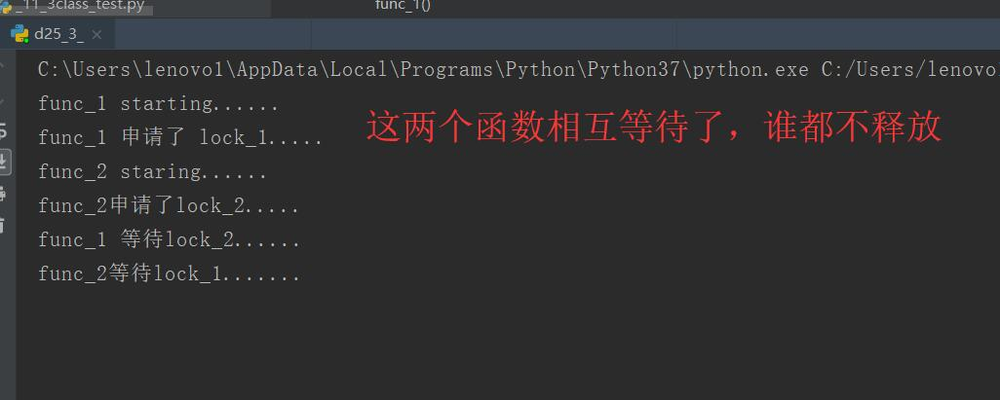
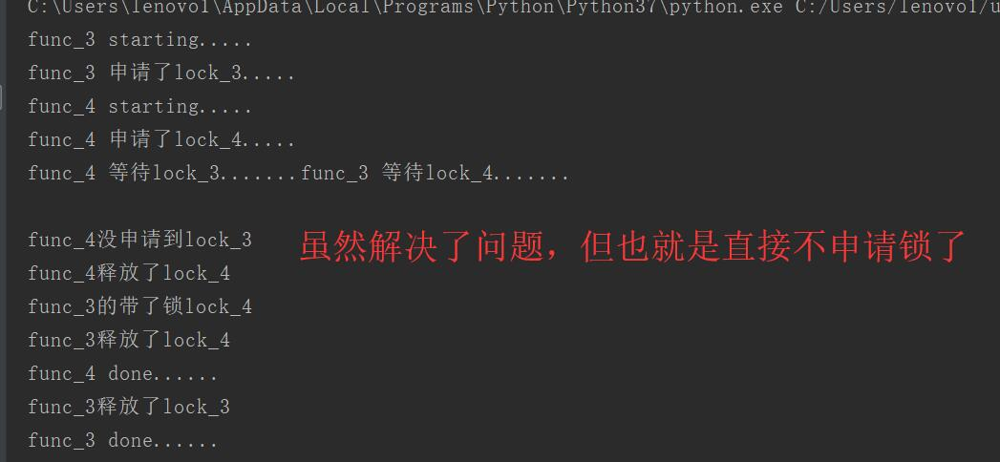

原文出处:本文由博客园博主心悦君兮君不知-睿提供。
原文连接:https://www.cnblogs.com/ruigege0000/p/11462696.html
原文连接:https://www.cnblogs.com/ruigege0000/p/11462696.html
一、死锁问题
- 例子
import threading
import time
lock_1 = threading.Lock()
lock_2 = threading.Lock()
def func_1():
print("func_1 starting......")
lock_1.acquire()#我先占上lock_1
print("func_1 申请了 lock_1.....")
time.sleep(2)#必须得等一下啊，让这这两个函数形成死锁
print("func_1 等待lock_2......")
lock_2.acquire()
print("func_1 申请了lock_2")
lock_2.release()
print("func_1 释放了 lock_2")
lock_1.release()
print("func_1 释放了 lock_1")
print("func_1 done")
def func_2():
print("func_2 staring......")
lock_2.acquire()#我先占上lock_2
print("func_2申请了lock_2.....")
time.sleep(4)
print("func_2等待lock_1.......")
lock_1.acquire()
print("func_2申请了lock_1.....")
lock_1.release()
print("func_2 释放了 lock_1")
lock_2.release()
print("func_2 释放了 lock_2")
print("func_2 done")
if __name__ == "__main__":
t1 = threading.Thread(target=func_1,args=())
t2 = threading.Thread(target=func_2,args=())
t1.start()
t2.start()
t1.join()
t2.join()
2.解决方式
我们加入判断语句，对申请不到的锁就不申请了，直接走下去
关注里面的rst = lock_4.acquire(timeout=-1)#可见这是一个返回值是布尔类型的变量，timeout代表超时跳
lock_3 = threading.Lock()
lock_4 = threading.Lock()
def func_3():
print("func_3 starting.....")
lock_3.acquire(timeout=-1)
print("func_3 申请了lock_3.....")
time.sleep(2)
print("func_3 等待lock_4.......")
rst = lock_4.acquire(timeout=-1)#可见这是一个返回值是布尔类型的变量，timeout代表超时跳出
if rst:
print("func_3的带了锁lock_4")
lock_4.release()
print("func_3释放了lock_4")
else:
print("func_3没申请到lock_4")
lock_3.release()
print("func_3释放了lock_3")
print("func_3 done......")
def func_4():
print("func_4 starting.....")
lock_4.acquire(timeout=4)
print("func_4 申请了lock_4.....")
time.sleep(2)
print("func_4 等待lock_3.......")
rst = lock_3.acquire(timeout=2)
if rst:
print("func_3得到了了锁lock_3")
lock_3.release()
print("func_4释放了lock_3")
else:
print("func_4没申请到lock_3")
lock_4.release()
print("func_4释放了lock_4")
print("func_4 done......")
if __name__ == "__main__":
t3 = threading.Thread(target=func_3,args=())
t4 = threading.Thread(target=func_4,args=())
t3.start()
t4.start()
t3.join()
t4.join()

解决了冲突，但是实际上没有解决这个死锁问题，但是这已经足够，本就应该避免出现这种问题
二、源码
d25_3_dead_lock.py
https://github.com/ruigege66/Python_learning/blob/master/d25_3_dead_lock.py
2.CSDN：https://blog.csdn.net/weixin_44630050（心悦君兮君不知-睿）
3.博客园：https://www.cnblogs.com/ruigege0000/
4.欢迎关注微信公众号：傅里叶变换，后台回复”礼包“，获取大数据学习资料